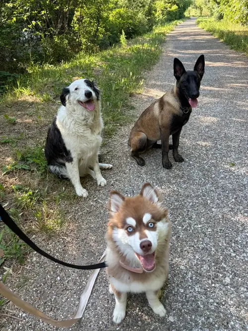

🦮 Promeneur de chien · Miramas & alentours
Promenade de chien à Miramas & alentours
Votre chien a besoin de se dépenser et vous manquez de temps, ou vous partez quelques jours ? On le promène pour vous : en pleine nature autour de Miramas, ou directement depuis chez vous. Dès 15 € la sortie.
🐾 Les formules
Trois façons de faire promener votre chien
Choisissez selon votre emploi du temps et le caractère de votre chien. Les trois se réservent en ligne.
La promenade nature
15 € / sortie
De 30 à 60 minutes sur de vrais chemins autour de Miramas, seul ou en petit groupe de chiens qui s'entendent. Pour le chien qui tourne en rond à la maison et a besoin de renifler, marcher, découvrir.
La sortie depuis chez vous
15 € / 30 min · 20 € l'heure
On vient chercher votre chien à la maison, on le promène dans votre quartier ou sur l'itinéraire que vous préférez, on le ramène, gamelle et eau fraîche comprises. Le service du « dog walker », idéal quand vous travaillez ou partez quelques jours. Déplacement offert à Miramas.
La randonnée du samedi
35 € / journée
Deux heures de randonnée en groupe de 5 chiens maximum, puis le reste de la journée à la pension. Vous le déposez le matin, il rentre le soir enfin fatigué. Le Forfait Évasion en détail →
Votre chien est déjà en pension chez nous ou en garderie ? Ajoutez-lui des balades individuelles pendant son séjour : 6 € les 30 minutes, 9 € les 45 minutes.
🦮 Une sortie, concrètement
Ce qui se passe pendant la promenade
Une vraie balade, pas un tour du pâté de maisons au pas de course.
En laisse ou en longe
Par défaut, votre chien reste attaché. On ne le lâche que si vous l'avez autorisé, que son rappel est fiable et que l'endroit s'y prête.
Un rythme à sa mesure
Un chiot, un senior et un jeune sportif ne marchent pas pareil. La durée et l'allure s'adaptent à votre chien, pas l'inverse.
Eau et pauses
Pauses régulières, eau fraîche, ombre. L'été, on sort aux heures fraîches et on privilégie les parcours au bord de l'eau.
Le temps de renifler
Flairer, c'est ce qui fatigue vraiment un chien et l'apaise. On lui laisse le temps d'explorer, c'est le cœur de la promenade.
Retour à la maison
Pour une sortie depuis chez vous : gamelle servie selon vos consignes, eau changée, porte bien refermée derrière nous.
Photos sur WhatsApp
Après chaque sortie, des photos et un petit mot : où il est allé, comment il s'est comporté, s'il a fait ses besoins.
📍 Nos chemins
Où on promène votre chien
Pour les promenades nature, on choisit le parcours selon la météo, la saison et votre chien, toujours à moins de vingt kilomètres de Miramas :
- Miramas-le-Vieux et le Défens — les collines juste derrière le village perché, ombragées, parfaites quand il fait chaud.
- Les rives de l'étang de Berre — de grands espaces ouverts et l'accès à l'eau pour ceux qui aiment se tremper.
- L'étang de l'Olivier, à Istres — un tour plat et régulier, praticable toute l'année.
- La Touloubre et le pont Flavien — le long de la rivière à l'ombre, jusqu'au pont romain de Saint-Chamas.
Pour une sortie depuis chez vous, on reste dans votre quartier, sur les trajets que votre chien connaît, ou sur l'itinéraire que vous nous indiquez.

🐕 Pour quels chiens ?
Les chiens à qui une promenade change la journée
Le jeune plein d'énergie
Aboiements, chaussures mâchouillées, chien collant le soir : neuf fois sur dix, c'est un chien qui ne s'est pas assez dépensé.
Le chien seul toute la journée
Une sortie à midi coupe une journée de dix heures en deux. Il se soulage, se dégourdit, et vous retrouvez un chien calme le soir.
Le senior
Des sorties plus courtes mais régulières, à son pas, pour garder ses articulations en mouvement sans le fatiguer.
Le chien réactif
Promené seul, aux heures creuses, loin des endroits où ça se passe mal. Notre approche →
Les sorties en groupe sont réservées aux chiens sociables, vaccinés (CHLPPi) et identifiés. Pour les autres, la promenade se fait seul — au même tarif.
💰 Tarifs
Combien coûte une promenade ?
Des prix affichés, pas un devis à demander. Le calcul exact se fait tout seul à la réservation.
| Formule | Durée | Prix |
|---|---|---|
| Promenade nature | 30 à 60 min | 15 € |
| Sortie depuis chez vous | 30 min | 15 € |
| Sortie depuis chez vous | 1 heure | 20 € |
| Balade pendant une pension | 30 / 45 min | 6 € / 9 € |
| Randonnée du samedi | 2 h + journée | 35 € |
🚗 Déplacement : offert à Miramas. Ailleurs, un forfait plus 0,50 € par kilomètre aller-retour, compté une seule fois par jour, pas à chaque sortie. Pour les sorties depuis chez vous, un deuxième animal au même domicile bénéficie d'un tarif réduit : on est déjà sur place.
📍 Zones
On promène les chiens de ces communes
Miramas et tout le nord de l'étang de Berre.
Miramas · Istres · Saint-Chamas · Salon-de-Provence · Fos-sur-Mer · Berre-l'Étang · Port-de-Bouc · Martigues
Vous avez aussi un chat ou d'autres animaux ? On s'occupe de tout le monde au même passage : garde de chat à domicile · lapins, poules & NAC.
❓ Questions fréquentes
Promenade de chien : vos questions
Combien coûte une promenade de chien ?
15 € la promenade nature de 30 à 60 minutes. Si l'on vient chercher votre chien chez vous, c'est 15 € la sortie de 30 minutes et 20 € l'heure. À Miramas, le déplacement est offert ; ailleurs, un forfait plus 0,50 € par kilomètre aller-retour s'ajoute, compté une seule fois par jour et non à chaque passage. Le prix exact s'affiche en ligne avant d'envoyer la demande.
Venez-vous chercher mon chien chez moi ?
Oui. On passe chez vous, on sort votre chien dans votre quartier ou sur l'itinéraire que vous nous indiquez, puis on le ramène, on remplit sa gamelle et son bol d'eau et on vous envoie les photos. Avant la première sortie, on se rencontre chez vous pour faire connaissance et récupérer les clés. Tous les détails sont sur la page garde de chien à domicile.
Mon chien sera-t-il promené avec d'autres chiens ?
Seulement s'il est sociable et si vous le souhaitez. Les sorties en groupe restent en petit comité, avec des chiens qui s'entendent. Un chien qui supporte mal ses congénères est promené seul, aux heures calmes.
Pouvez-vous promener mon chien tous les jours pendant que je travaille ?
Oui : une, deux ou trois sorties par jour, sur autant de jours que nécessaire, en semaine comme le week-end. C'est le cas le plus courant : un chien seul de 8 h à 18 h a besoin d'une vraie coupure au milieu de la journée. Chaque passage compte sur la carte de fidélité offerte.
Et quand il fait très chaud ?
On adapte : sorties tôt le matin ou en soirée, parcours ombragés ou au bord de l'eau, durée raccourcie. Pendant la saison des feux, l'accès aux massifs dépend de l'arrêté préfectoral du jour ; on ne promène jamais un chien dans une zone fermée. Nos conseils sont détaillés dans protéger son chien de la chaleur en Provence.
Mon chien tire en laisse ou réagit aux autres chiens : est-ce possible ?
Oui, c'est même une bonne raison de le faire promener par quelqu'un d'habitué. On le sort seul, aux heures creuses, sur des itinéraires tranquilles, et on vous dit honnêtement comment ça s'est passé. Plus de détails sur la page chien réactif.
Est-ce que mon chien est détaché pendant la balade ?
Non, pas sans votre accord. Par défaut, il reste en laisse ou en longe. Le lâcher ne se fait que si vous l'avez autorisé, que son rappel est fiable et que l'endroit le permet.
Êtes-vous assurée ?
Oui : responsabilité civile professionnelle, et certification ACACED, l'attestation de connaissances obligatoire pour les professionnels des animaux de compagnie. Micro-entreprise déclarée. Les documents vous sont envoyés sur simple demande.
🐾 Nos autres services
Tout ce qu'on fait pour vos animaux
Pension pour chien
En famille, sans cage, dès 25 €/nuit
Garderie à la journée
20 € la journée, 10 € la demi
Garde de chien à domicile
Sortie, repas, médicaments, dès 15 €
Garde de chat à domicile
Repas, litière, câlins, dès 12 €
Lapins, poules & NAC
Visites à domicile dès 8 €
Toilettage simple
Bain, séchage, brossage, 30 €